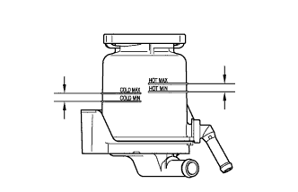
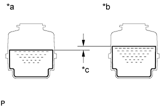

POWER STEERING OIL PRESSURE SWITCH > INSTALLATION |
| 1. INSTALL POWER STEERING OIL PRESSURE SWITCH |
Install a new O-ring to the power steering oil pressure switch.
Apply a light coat of engine oil to the O-ring.
Using SST, install the power steering oil pressure switch.
| *1 | Fulcrum Length |
Connect the power steering oil pressure switch connector.
| 2. INSTALL FAN AND GENERATOR V BELT |
Install the fan and generator V belt (Click here).
| 3. ADD POWER STEERING FLUID |
| 4. BLEED AIR FROM POWER STEERING SYSTEM |
Check the fluid level.
Jack up the front of the vehicle and support it with stands.
Turn the steering wheel.
With the engine stopped, turn the wheel slowly from lock to lock several times.
Lower the vehicle.
Start the engine.
Run the engine at idle for a few minutes.
Turn the steering wheel.
With the engine idling, turn the wheel to the left or right full lock position and keep it there for 2 to 3 seconds, then turn the wheel to the opposite full lock position and keep it there for 2 to 3 seconds.*1
Repeat *1 several times.
Stop the engine.
 |
Check for foaming or emulsification.
| *a | CORRECT |
| *b | INCORRECT |
Check the fluid level.
| 5. INSPECT FOR POWER STEERING FLUID LEAK |
| 6. CHECK POWER STEERING FLUID LEVEL |
|  |
Keep the vehicle horizontal.
With the engine stopped, check the fluid level in the reservoir.
If necessary, add fluid.
Start the engine and run it at idle.
Turn the steering wheel from lock to lock several times to raise the fluid temperature.
|
Check for foaming or emulsification.
| *a | CORRECT |
| *b | INCORRECT |
|  |
With the engine idling, measure the fluid level in the reservoir.
| *a | Engine Idling |
| *b | Engine Stopped |
| *c | 5 mm or less |
Stop the engine.
Wait a few minutes and remeasure the fluid level in the reservoir.
Check the fluid level.
| 7. INSTALL FRONT FENDER APRON SEAL RH |
Remove the 4 clips and front fender apron seal RH.
| 8. INSTALL FRONT WHEEL |